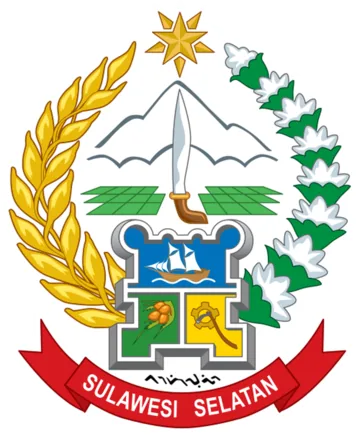
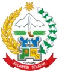

Status 🚦
AMAN
Memuat kondisi laut…

Portal ini dibangun untuk membiasakan masyarakat, nelayan, pelaku pelayaran, dan pengelola pelabuhan menggunakan informasi resmi secara digital—lebih mudah dicari, dipahami, dan digunakan sebelum berlayar.

Data maritim Sulawesi Selatan
Pantau kondisi laut, arah angin, serta cuaca untuk lokasi perairan dan pelabuhan pilihan Anda.
Info Layanan Masyarakat.
Sumber: Data Gempabumi Terbuka BMKG ↗
Pilih lokasi untuk memuat data terbaru.
Ketuk penanda untuk memilih lokasi.
Untuk kejadian darurat kapal, orang hilang di laut, atau kecelakaan pelayaran di Sulawesi Selatan.
BMKG Maritim digunakan untuk informasi cuaca, gelombang, dan angin. Nama pelabuhan serta titik lokasi pada peta mengacu pada data Direktorat Jenderal Perhubungan Laut Kemenhub melalui MaritimHUB / HUBNET. Peta dasar menggunakan OpenStreetMap.
Informasi ini membantu pemantauan awal; keputusan operasional tetap mengikuti arahan BMKG, Syahbandar, dan otoritas pelabuhan.